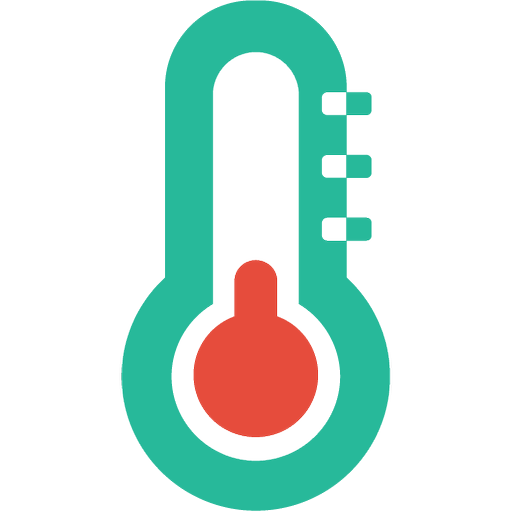

Températures à l'IUT de Blagnac
Objectif du site:
Ce site à été créé afin de faciliter la consultation des mesures des différents capteurs (Luminosité et Température) par des élèves de l'IUT ou par d'autres membres de l'IUT. Ce site est principalement géré par l'administrateur ainsi que par les gestionnaires de chaque bâtiment.
Contenu de ce site:
- La page Administration accessible uniquement par la personne autorisée, possédant le mot de passe pour y accéder. La page sert à l'ajout et la suppression de capteurs et/ou de bâtiments.
- La page Gestion est accessible uniquement par les gestionnaires qui, eux aussi, possèdent leur propre mot de passe pour y accéder. Cette page affiche les 15 dernières valeurs mesurées par les capteurs de leur propre bâtiment uniquement.
- La page Consultation, accessible par tout le monde, affiche la dernière mesure des capteurs de tous les bâtiments.
